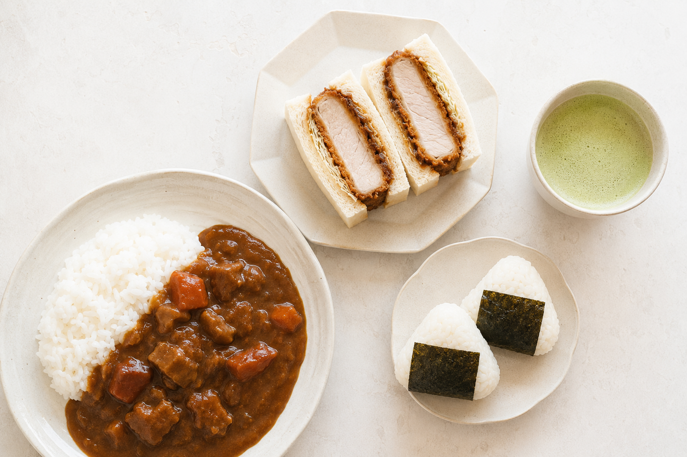
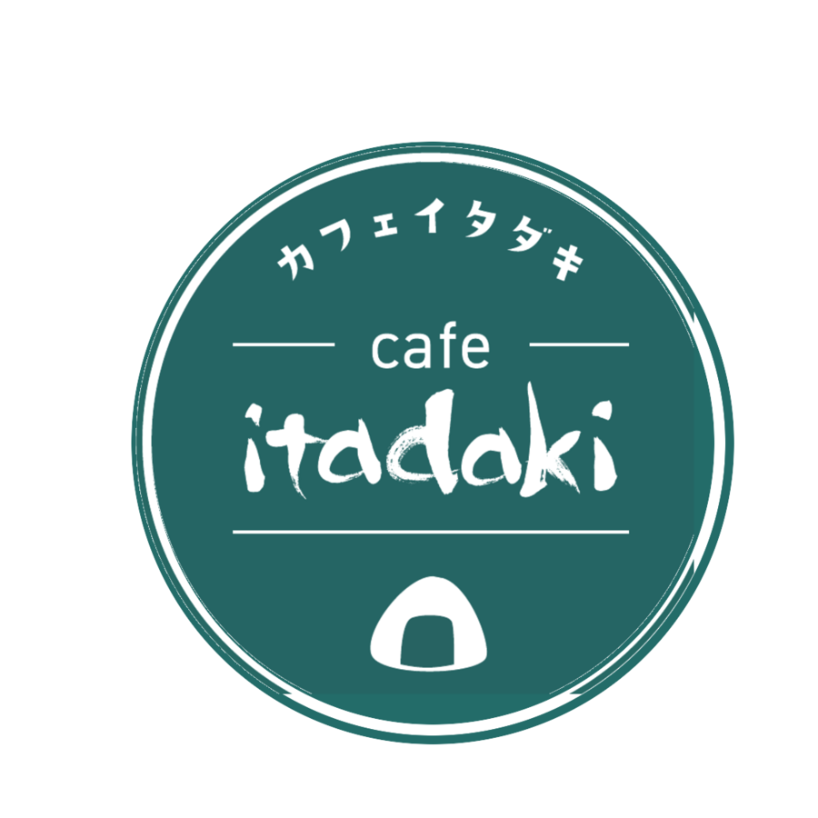
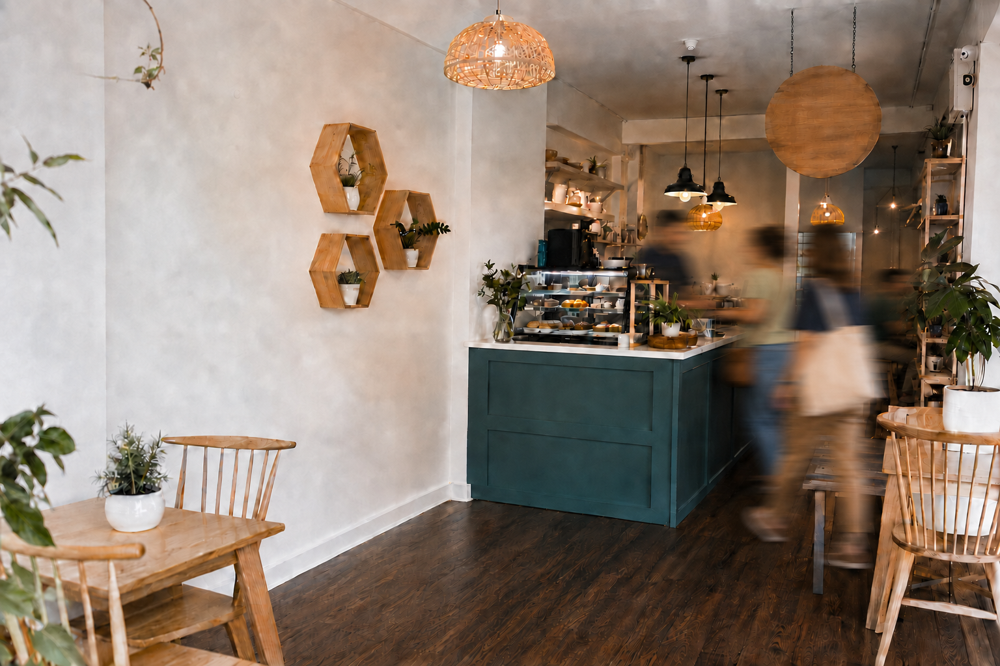
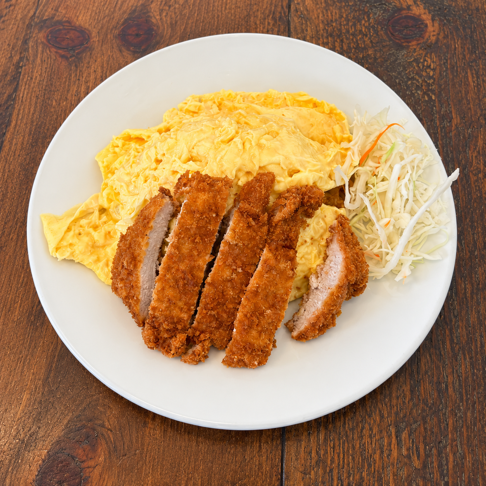

Onigiri
Our signature. Simple, wholesome rice with comforting fillings.

Order online ↗
CAFÉ ITADAKI · BROOKLINE
Onigiri, Japanese curry, omurice, and ramen—the casual, comforting flavors of Japan, prepared in our neighborhood kitchen.
Order direct on Toast ↗SCROLL TO DISCOVER ↓
01 — ITADAKI
Sometimes, you just want the food you remember. A warm bowl of curry. Fluffy omurice. A comforting ramen. Or a simple onigiri, made just right.
Café Itadaki brings the casual Japanese food we know and love to Boston. Our Japanese comfort-food dishes are prepared in our small Brookline kitchen—familiar, satisfying, and easy to enjoy any day.
02 — OUR SIGNATURE
Our signature onigiri are simple, satisfying, and naturally easy to enjoy. Carefully shaped in our kitchen with comforting fillings, they are a wholesome taste of Japan for lunch, a snack, or life on the go.
JAPANESE EVERYDAY FAVORITES

Our signature. Simple, wholesome rice with comforting fillings.
Rich, comforting, and made in our Brookline kitchen.
The casual dishes you remember from Japan—made here.
FEATURED DISH · JAPANESE COMFORT FOOD
$24.95
Fluffy omelet over chicken ketchup rice, topped with crispy pork katsu and our house-made demi-glace sauce. A comforting Japanese favorite, made in our Brookline kitchen.
Explore the menu ↗
WHEN YOU MISS THE TASTE OF JAPAN